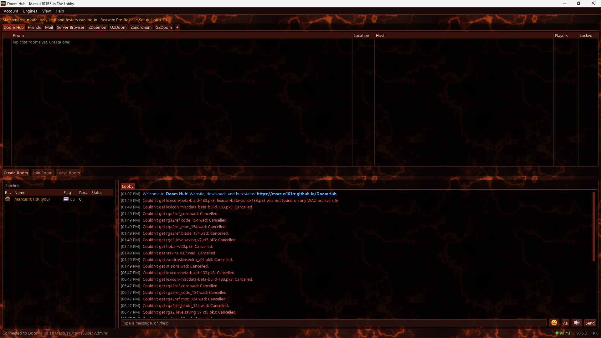
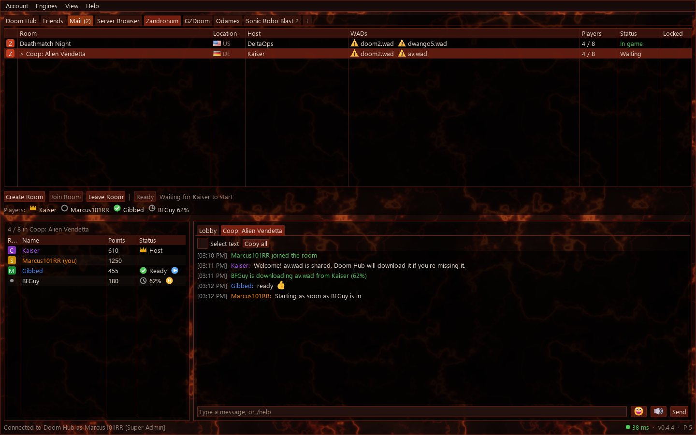
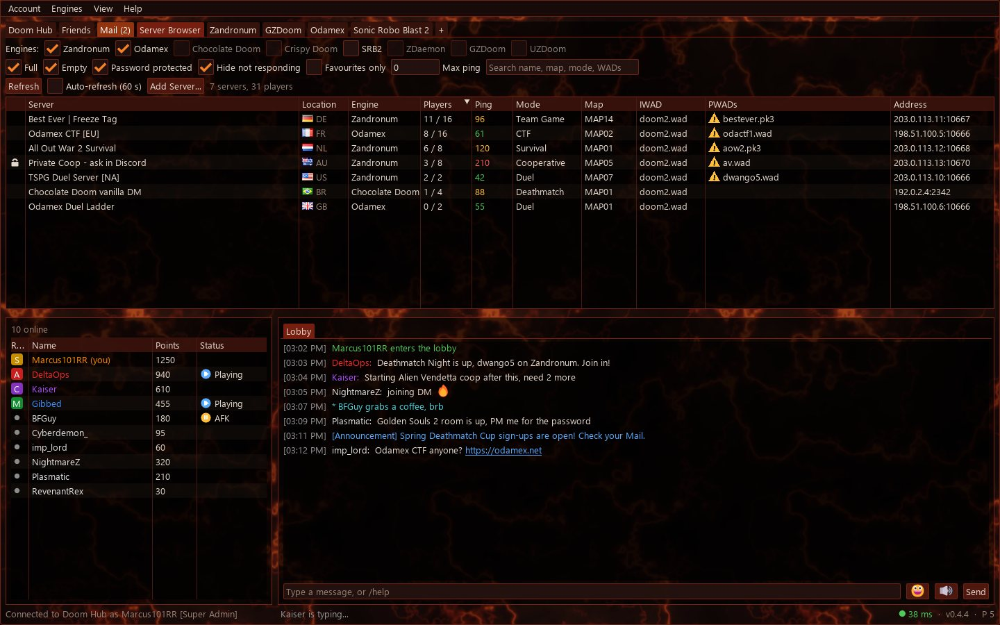
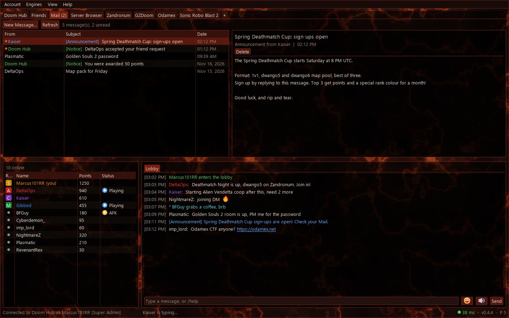
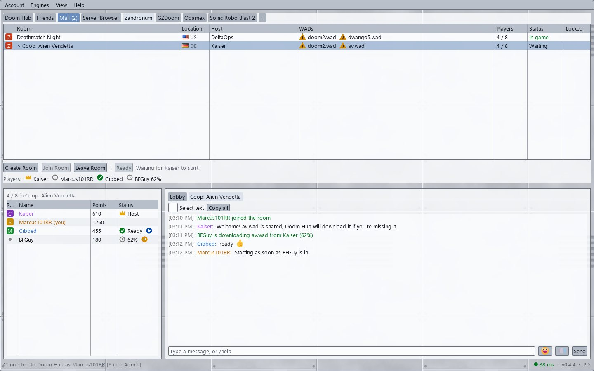
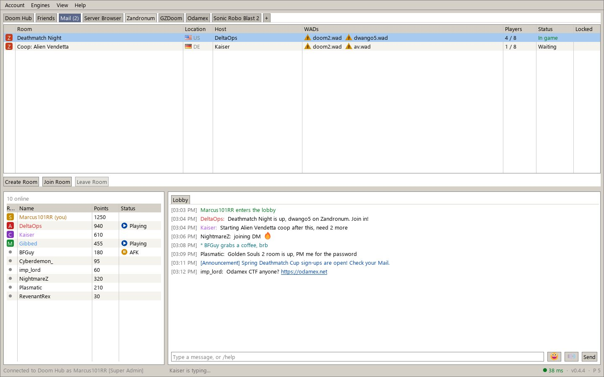

Supported engines
Add the engines you have once; Doom Hub launches them with the right settings. You bring your own IWADs.
Features
Rooms
Create, join and edit rooms with passwords, game options and DMFlags. Press Ready and you launch automatically when the host starts, even mid-game where the engine allows.
File check & sharing
Doom Hub compares your WADs with the host's. Missing PWADs can be fetched from /idgames and the community WAD hosts, or from the host directly. IWADs are never shared.
Server Browser
Live public servers for Zandronum, Odamex, Chocolate Doom and SRB2, with country flags, filters, favourites and one-click joining.
Chat
Lobby and room chat with emoji, sound clips (WAV/MP3), "is typing", whispers and links that open with Ctrl+click.
Mail & friends
A private inbox for messages, staff announcements and notifications, plus friends, profiles, avatars and points.
Your look
Five themes: Classic, Light, Dark, and the textured Hellfire and Tech Base. Resizable panels and rank colours.
Safe updates
Doom Hub updates itself, from the hub or from these GitHub releases. Every update is signed and checked before it installs.
Staff tools
Ranks, kick, mute, ban, maintenance mode, rank icons and colours, engine icons, emoji and sound libraries.
Screenshots












Getting started
- Download DoomHub.exe and run it. Keep it in a folder you can write to so it can update itself.
- Create an account on the login screen.
- Engines › Manage Engines: add your engine's .exe and the folders where your WADs live.
- Join a room (or create one), press Ready, and you're in when the host starts.
FAQ
Is the download safe?
Each release comes with DoomHub.exe.sig. Doom Hub checks that signature before installing any update and refuses files that weren't signed by the developer.
Do I need the Doom IWADs?
Yes. Doom Hub never shares or downloads IWADs (doom.wad, doom2.wad...). Steam and GOG copies work; free alternatives like Freedoom work too.
Why can't friends join my game?
Hosting needs the game's UDP port forwarded on your router (Doom Hub shows which one when you create a room). Sharing files directly needs the sharing port (UDP 10667 by default).
What are the rules?
Be decent, keep it clean, and only share files you're allowed to share. You must be 13 or older. Breaking the rules earns infractions, and several within 12 months mean an automatic ban. Read the full Terms of Service.
Where are my settings?
In %APPDATA%\DoomHub\DoomHub. Passwords are never saved.